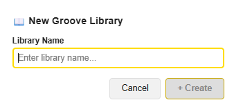
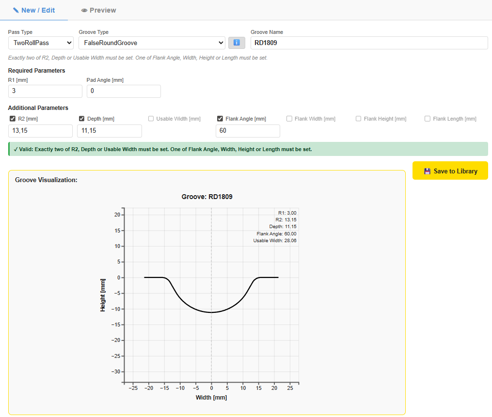
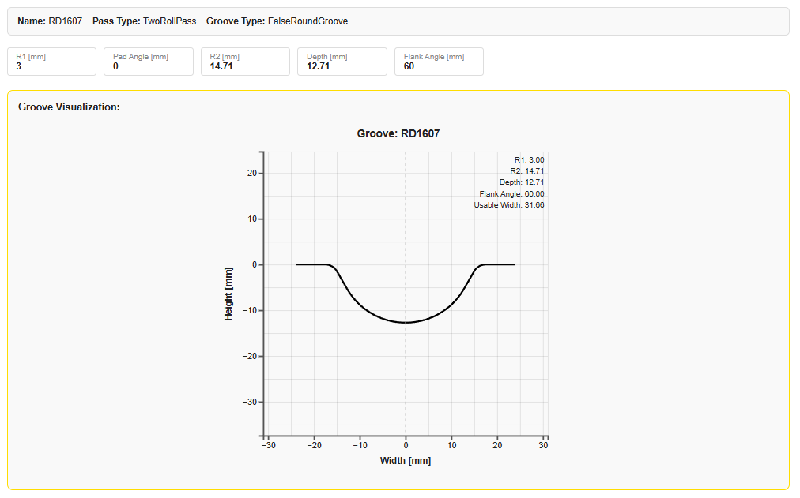
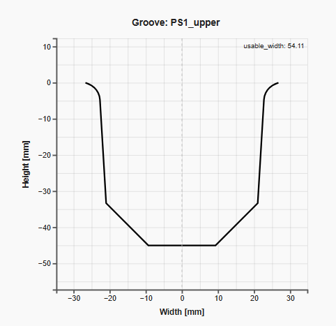
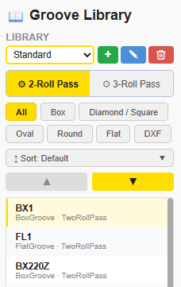
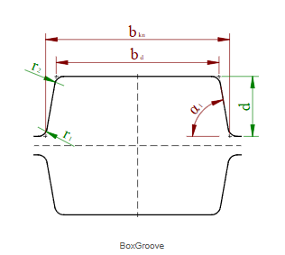
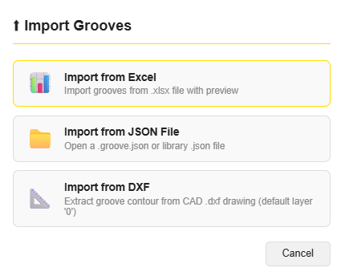
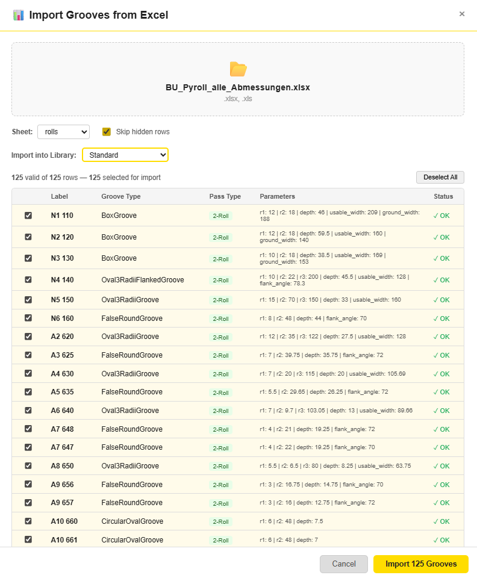

PyRoll GUI | Date: June 2026
The Groove Library tab is the central database for all roll groove definitions. It stores grooves in named libraries and makes them available for assignment in the Pass Design tab. Grooves are defined by their geometric type and a set of numeric parameters; the GUI computes the groove contour in real time and displays it as a 2-D cross-section plot.
Grooves are grouped into libraries. A library is simply a named container — for example Standard, Project-X, or Archive. Every groove belongs to exactly one library and can be moved or copied between libraries via export/import.
The library selector at the top of the tab lists all available libraries. At least one library (Standard) always exists and cannot be deleted.

+ New Library next to the library selector.+ Create.
Click + New Groove to open the New / Edit panel.
The same panel appears when you click the edit icon on an existing groove card.

Fill in the three header fields first:
| Field | Description |
|---|---|
| Pass Type | The roll pass this groove is designed for: TwoRollPass, ThreeRollPass, or AsymmetricRollPass. |
| Groove Type | The geometric type, e.g. FalseRoundGroove, BoxGroove, Oval3RadiiGroove. The ℹ button next to the selector opens a short parameter description. |
| Groove Name | A unique name within the selected library, e.g. RD1809 or N1 110. Used as identifier in the Pass Design tab. |
Each groove type defines a fixed set of Required Parameters (always shown, always must be filled) and a set of Additional Parameters (shown as checkboxes — check to enable and enter a value).
The constraint rule shown below the header (e.g. "Exactly two of R2, Depth or Usable Width must be set. One of Flank Angle, Width, Height or Length must be set.") describes exactly which combination of additional parameters is geometrically valid. The validation box at the bottom of the form shows in real time whether the current selection satisfies the rule.
| Parameter | Unit | Meaning |
|---|---|---|
| R1 | mm | Bottom radius (groove base) |
| R2 | mm | Flank radius (transition from base to flank) |
| R3 | mm | Third radius (e.g. shoulder radius in Oval3RadiiFlanked) |
| Depth | mm | Groove depth from the roll surface to the groove bottom |
| Usable Width | mm | Width of the groove at the roll surface level (opening width) |
| Flank Angle | ° | Inclination of the groove flanks from vertical |
| Flank Width / Height / Length | mm | Flank geometry dimensions (type-specific) |
| Pad Angle | mm | Angle of the flat pad at the groove base (e.g. FalseRoundGroove); usually 0 |
| Ground Width | mm | Width of the flat bottom (BoxGroove) |
Below the parameter inputs a validation status box shows whether the current parameter set is geometrically consistent:
The Save to Library button is disabled as long as the groove is invalid.
As soon as a valid parameter set is entered, the Groove Visualization plot updates in real time. It shows the groove contour as a 2-D cross-section (Width [mm] on the x-axis, Height [mm] on the y-axis) with the roll surface at y = 0. Key computed values — R1, R2, Depth, Flank Angle, Usable Width — are displayed in the upper-right corner of the plot.

Groove contours defined from a spline (imported from DXF or defined by point series) are shown as a smooth free-form curve rather than arc segments:

The groove list can be narrowed down using the filter bar above the groove cards:

| Filter | Description |
|---|---|
| Pass Type | Show only grooves for 2-Roll, 3-Roll, or Asymmetric passes. |
| Groove Type | Filter by geometric type: Box, Oval, FalseRound, CircularOval, Diamond, etc. |
| Search | Free-text search on the groove name (case-insensitive, partial match). |
Filters are combined: selecting 2-Roll and BoxGroove shows only 2-Roll Box grooves. Reset individual filters by clearing the selector or the search field.
Each groove card in the library list has an ℹ Info button. Clicking it opens a modal overlay that shows the full groove geometry at a glance:

Grooves and entire libraries can be exported as .groove.json / .library.json files that can be shared, archived, or re-imported into another installation of PyRoll GUI.
| Action | How | File |
|---|---|---|
| Export single groove | Open the groove card menu (⋮) → Export |
<name>.groove.json |
| Export full library | Library selector menu → Export Library |
<library>.library.json |
Both formats are plain JSON and can be opened in any text editor.
The library format wraps all groove objects in a "grooves" array with
a top-level "library" name field.
Click ↑ Import Grooves to open the import source selector:

Three import sources are available:
The Excel import is designed for bulk import of entire groove catalogues.
It reads a .xlsx or .xls file and parses each row as one groove.

| Control | Description |
|---|---|
| Sheet | Drop-down to select the worksheet. Defaults to the first visible sheet. Only one sheet can be imported per session. |
| Skip hidden rows | When checked, rows marked as hidden in Excel are excluded from import. Useful when the source file uses hidden rows for subtotals or notes. |
| Import into Library | Target library for all imported grooves. Defaults to Standard; select any existing library or create a new one before opening the dialog. |
All parsed rows appear in the preview table before import. For each row the table shows:
label column.BoxGroove, FalseRoundGroove.2-Roll, 3-Roll, etc.
Use Deselect All to uncheck all rows and then manually select the ones to import.
The counter above the table shows how many rows are currently selected and valid.
Click Import N Grooves to start the import.
Existing grooves with the same name in the target library are overwritten without warning.
label, groove_type, pass_type, r1, r2, …).
Contact your administrator for the template file.
| Column | Content |
|---|---|
label | Groove name (unique string) |
groove_type | PyRoll groove class name, e.g. FalseRoundGroove |
pass_type | TwoRollPass, ThreeRollPass, or AsymmetricRollPass |
r1, r2, r3 | Radii in mm |
depth | Groove depth in mm |
usable_width | Usable width in mm (optional) |
flank_angle | Flank angle in degrees |
ground_width | Flat bottom width in mm (BoxGroove) |
pad_angle | Pad angle in mm (FalseRoundGroove); usually 0 |
Opens a file picker for .groove.json or .library.json files
previously exported from PyRoll GUI. The target library is selected in the same dialog.
Reads the groove contour from a CAD .dxf file.
The contour must be drawn on the default layer (0) as a
continuous polyline or spline representing the half-groove profile
(right half, from the groove centre to the roll edge).
The imported contour is stored as a SplineGroove (point series) and visualized as a smooth free-form curve (see Section 3.3). No analytic parameter fitting is performed — the DXF geometry is used as-is.
Michael Molter | PyRoll GUI – Groove Library Guide